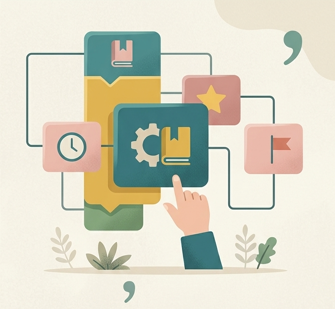

Counseling Fields
우울, 불안, 공황 등 신경증부터 조현병, 조울병 등 전문적인 심리 개입이 필요한 문제를 다룹니다.
분노 조절, 스트레스 관리 및 인지행동치료(CBT) 기반의 인지재구조화 훈련을 통해 자기관리능력을 향상시킵니다.
대인관계 갈등, 가족 문제, 부부상담 및 효율적인 양육방법 코칭을 통해 관계의 회복을 돕습니다.
등교거부, 또래관계 어려움,학업수행, 진로에 대해 고민하는 청소년 들이 마음의 근육을 키워 잘 적응해 갈수 있도록 돕습니다.
스트레스, 심리적 상처, 취업, 연애, 관계 갈등 등 다양한 어려움을 인 지재구조화, 행동요법, 사회기술훈련(SST)등을 통해 보다 나은 삶을 살아갈 수 있도록 돕습 니다.
신체적, 생활적, 사회적으로 약해진 기능과 그에 따른 우울과 무기력, 불면, 다른 세대와의 소통의 어려움 등을 다뤄, 편안한 삶과 관계회복을 도와드립니다.